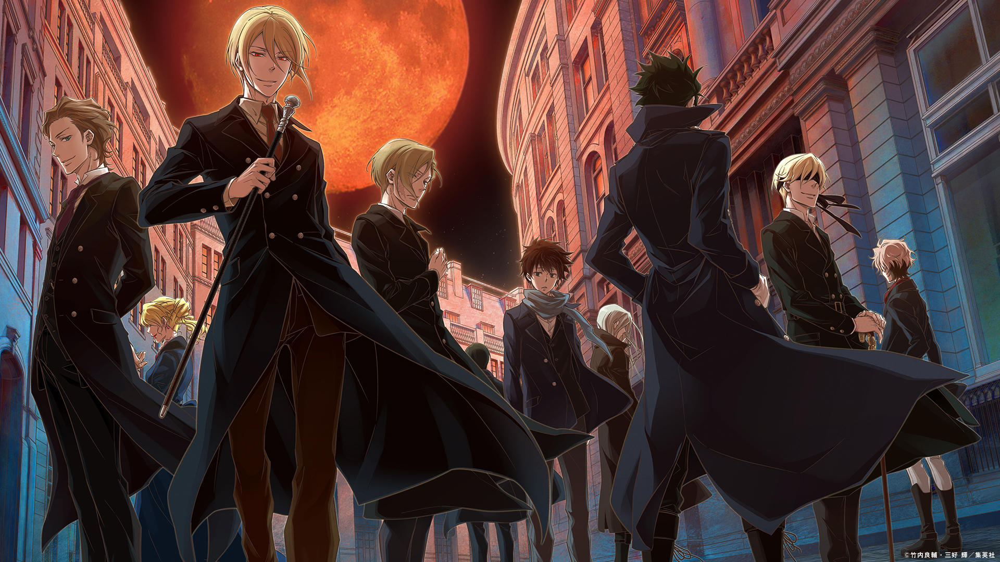
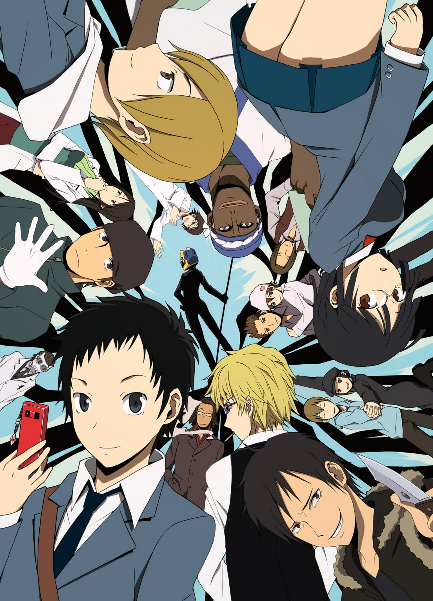
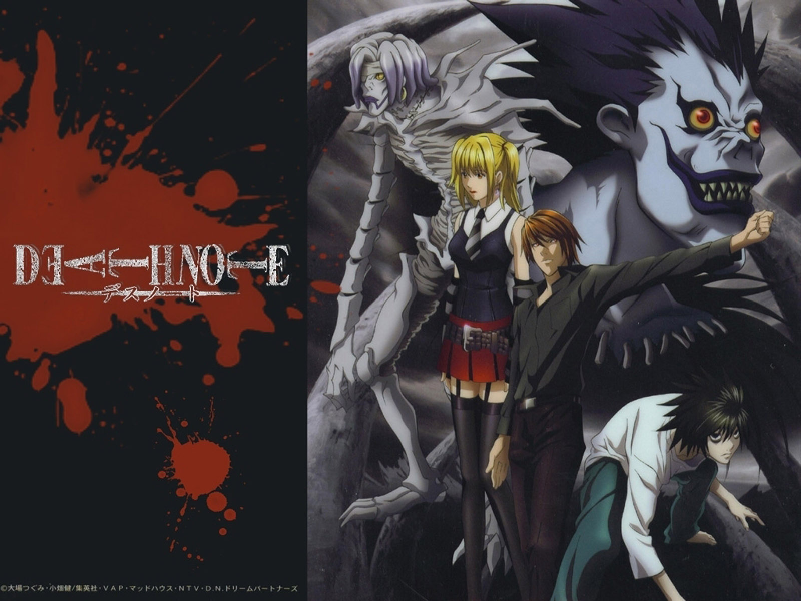

5: Kami no Tou

Ratings : 🌟 7.7
English Name : Tower of God
Genre : ActionAdventureMysteryDramaFantasy
Seasons : 1
Episodes : 13
Air-Date : 2-April-2020
Watch-Time : 24 min.(Per Ep.)
Synopsis:
There is a tower that summons chosen people called "Regulars" with the promise of granting their deepest desires. Whether it be wealth, fame, authority, or something that surpasses them all—everything awaits those who reach the top.
Twenty-Fifth Bam is a boy who had only known a dark cave, a dirty cloth, and an unreachable light his entire life. So when a girl named Rachel came to him through the light, his entire world changed. Becoming close friends with Rachel, he learned various things about the outside world from her. But when Rachel says she must leave him to climb the Tower, his world shatters around him. Vowing to follow after her no matter what it takes, he sets his sight on the tower, and a miracle occurs.
Thus begins the journey of Bam, a young boy who was not chosen by the Tower but opened its gates by himself. They call his kind "Irregulars"—beings that have shaken the very foundation of the Tower each time they set foot inside it.
4: Yuukoku no Moriarty
Ratings : 🌟 8.0
English Name : Moriarty the Patriot
Genre :MysteryHistoricalPsychologicalShounen
Seasons : 1
Episodes : 11
Air-Date : 11-October-2020
Watch-Time : 24 min.(Per Ep.)
Synopsis:
During the late 19th century, Great Britain has become the greatest empire the world has ever known. Hidden within its success, the nation's rigid economic hierarchy dictates the value of one's life solely on status and wealth. To no surprise, the system favors the aristocracy at the top and renders it impossible for the working class to ascend the ranks.
William James Moriarty, the second son of the Moriarty household, lives as a regular noble while also being a consultant for the common folk to give them a hand and solve their problems. However, deep inside him lies a desire to destroy the current structure that dominates British society and those who benefit from it.
Alongside his brothers Albert and Louis, the trio will do anything it takes to change the filthy world they live in—even if blood must be spilled.
3: Durarara!!
Ratings : 🌟 8.2
English Name : Durarara!!
Genre : ActionMysterySupernatural
Seasons : 1
Episodes : 24
Air-Date : 8-January-2010
Watch-Time : 24 min.(Per Ep.)
Synopsis:
In Tokyo's downtown district of Ikebukuro, amidst many strange rumors and warnings of anonymous gangs and dangerous occupants, one urban legend stands out above the rest—the existence of a headless "Black Rider" who is said to be seen driving a jet-black motorcycle through the city streets.
Mikado Ryuugamine has always longed for the excitement of the city life, and an invitation from a childhood friend convinces him to move to Tokyo. Witnessing the Black Rider on his first day in the city, his wishes already seem to have been granted. But as supernatural events begin to occur, ordinary citizens like himself, along with Ikebukuro's most colorful inhabitants, are mixed up in the commotion breaking out in their city.
2: Yakusoku no Neverland

Ratings : 🌟 8.7
English Name : The Promised Neverland
Genre : Sci-FiMysteryHorrorPsychologicalThrillerShounen
Seasons : 2
Episodes : 12(Per Season)
Air-Date : 10-January-2019
Watch-Time : 24 min.(Per Ep.)
Synopsis:
Surrounded by a forest and a gated entrance, the Grace Field House is inhabited by orphans happily living together as one big family, looked after by their "Mama," Isabella. Although they are required to take tests daily, the children are free to spend their time as they see fit, usually playing outside, as long as they do not venture too far from the orphanage—a rule they are expected to follow no matter what. However, all good times must come to an end, as every few months, a child is adopted and sent to live with their new family... never to be heard from again.
However, the three oldest siblings have their suspicions about what is actually happening at the orphanage, and they are about to discover the cruel fate that awaits the children living at Grace Field, including the twisted nature of their beloved Mama.
1: Death Note: Desu noto
Ratings : 🌟 8.6
English Name : Death Note
Genre : MysteryPolicePsychologicalThrillerSupernaturalShounen
Seasons : 1
Episodes : 37
Air-Date : 4-October-2006
Watch-Time : 24 min.(Per Ep.)
Synopsis:
A shinigami, as a god of death, can kill any person—provided they see their victim's face and write their victim's name in a notebook called a Death Note. One day, Ryuk, bored by the shinigami lifestyle and interested in seeing how a human would use a Death Note, drops one into the human realm.
High school student and prodigy Light Yagami stumbles upon the Death Note and—since he deplores the state of the world—tests the deadly notebook by writing a criminal's name in it. When the criminal dies immediately following his experiment with the Death Note, Light is greatly surprised and quickly recognizes how devastating the power that has fallen into his hands could be.
With this divine capability, Light decides to extinguish all criminals in order to build a new world where crime does not exist and people worship him as a god. Police, however, quickly discover that a serial killer is targeting criminals and, consequently, try to apprehend the culprit. To do this, the Japanese investigators count on the assistance of the best detective in the world: a young and eccentric man known only by the name of L.